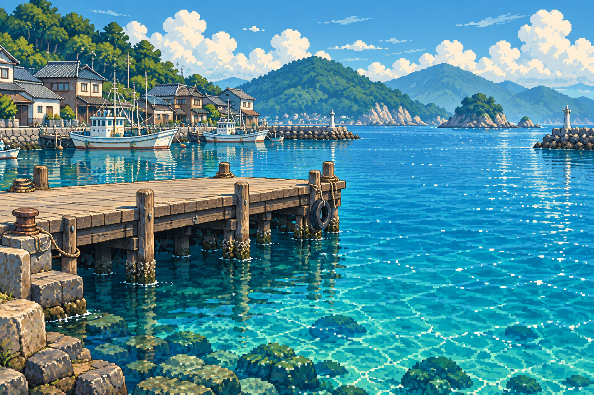

フィッシング ～一獲千金～
テスト版を準備しています
少しお待ちください。
セーブデータはこのブラウザに残ります。
少しお待ちください。
セーブデータはこのブラウザに残ります。

…………
ヒトデ、フグ、ときどきキノコ。
〜 一獲千金 〜
タップで釣る、小さな海の物語。
← → 移動、ジャンプで避けて、パンチで進もう。
横持ちなら両手で操作しやすくなります。縦持ちでも遊べます。PC：← → 移動、↑ ジャンプ、スペース パンチ。
こんな げーむに まじに
なっちゃって どうするの
ヒトデ、ボールペン、海ぶどう。
しょうもない釣果を笑ううちに、
この港に、顔見知りが増えていた。
金塊の噂を追って、遠くまで来た。
帰りの船では、明日の釣りの話をした。
おじさん「また、隣で釣ろう」
あなた「ええ。次は何が釣れるでしょうね」
魚を釣りに、この港へ来た。いつしか、金塊の噂を追っていた。
ヒトデを釣り、海ぶどうに出会い、沖で本当の魚釣りを知った。
裏通りの噂を越え、船長と岩礁へ。
金塊も釣った。それでも、明日もまた釣りに来たい。
おじさん「明日も、隣を空けておくよ」
あなた「……また、話しに来ます」
STAFF
制作
葡萄🍇（budou）
SPECIAL THANKS
Xのフォロワーの皆様
そして、この港で釣り糸を垂らしたあなたへ。
海は、明日もここにある。
THE END